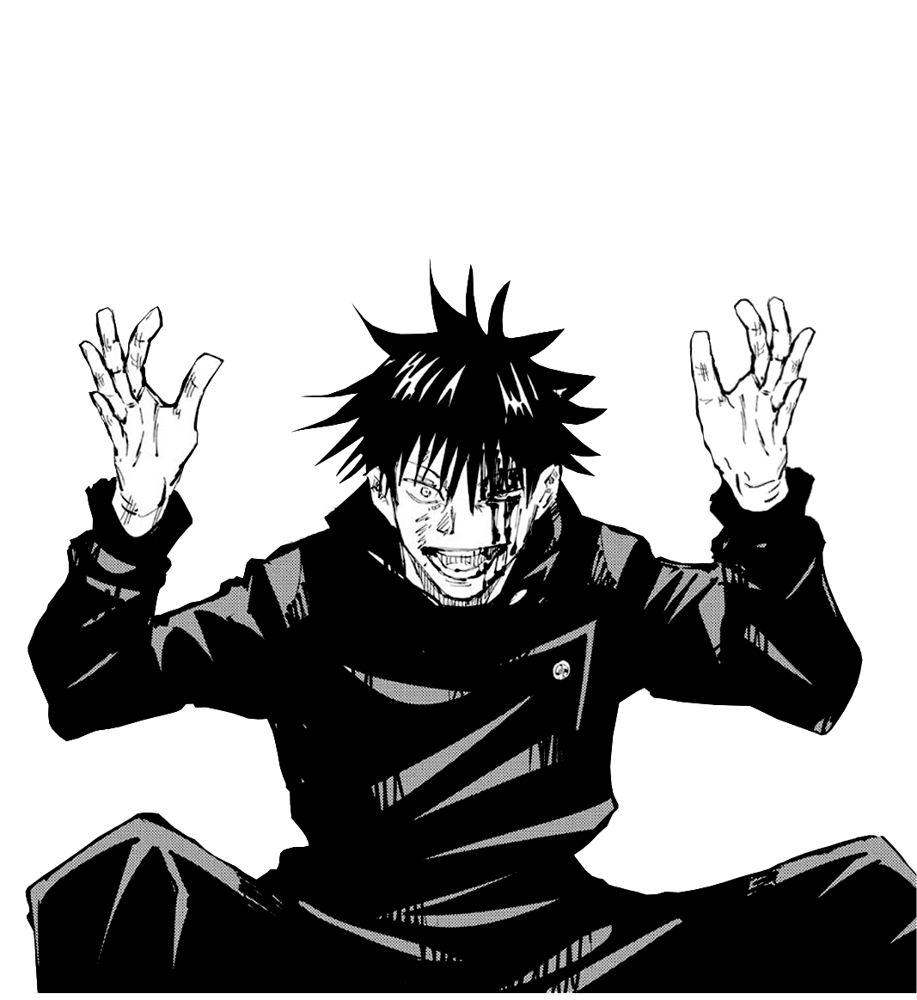

Megumi Fushiguro (Japanese: 伏黒 恵, Hepburn: Fushiguro Megumi) is a fictional character of the manga series Jujutsu Kaisen created by Gege Akutami. He is a first-year student at Tokyo Jujutsu High, an academy to become a Jujutsu Sorcerer and develop Cursed Techniques to fight against Cursed Spirits, beings manifested from Cursed Energy due to negative emotions flowing from humans. He is a descendant to the Zen'in family, one of the ultimate clans dominating the world of sorcery.[2] Early in Jujutsu Kaisen, he is instructed by teacher Satoru Gojo to locate one of Ryomen Sukuna's mummified fingers, which leads to him partnering with and befriending Yuji Itadori, a fellow first-year Jujutsu Sorcerer who ate the finger and caused Ryomen Sukuna to incarnate.
